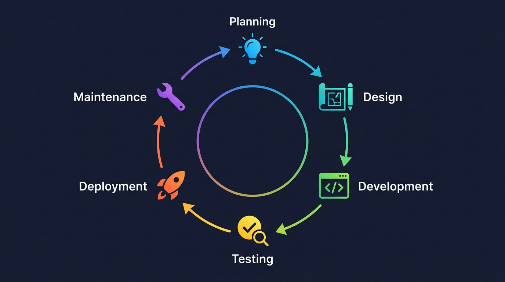
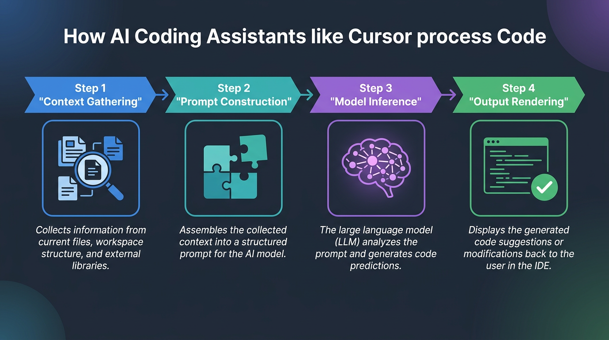
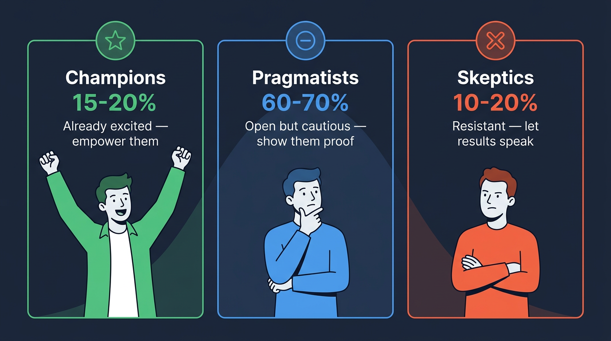
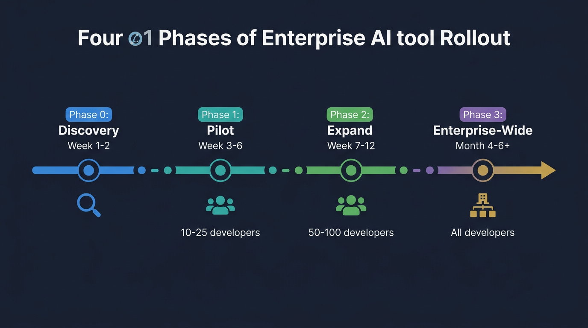
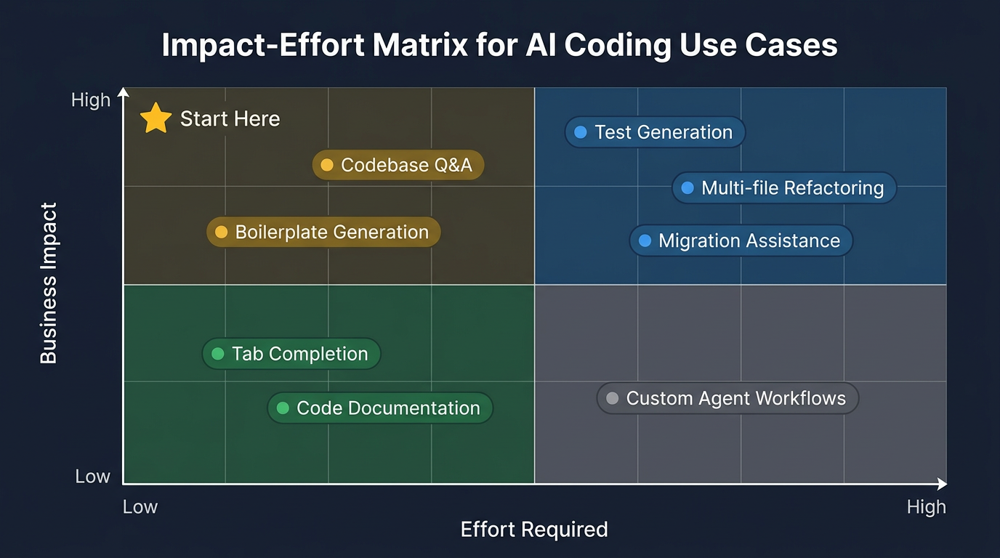
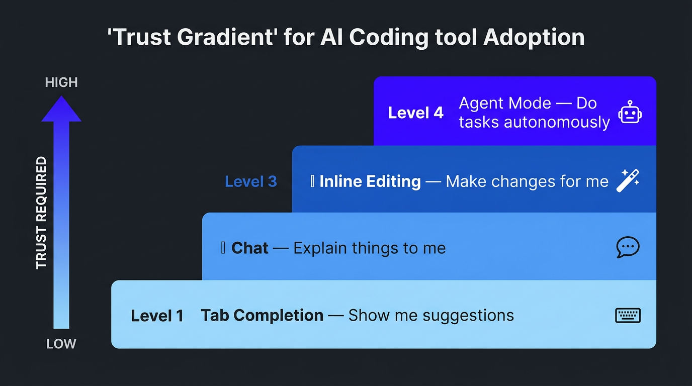

The AI Deployment Manager's Study Guide
A sequential learning journey — from technical foundations to enterprise mastery.
Technical Foundations
Before you can talk credibly about AI-powered development, you need to understand the world developers live in. This section gives you that foundation — no coding required.
Chapter 1: How Software Gets Built
Every piece of software — from a banking app to a video game — follows a lifecycle. Think of it like building a house.

The Six Phases
| Phase | House Analogy | Software Equivalent |
|---|---|---|
| Planning | "We need a 3-bedroom house with a pool" | Product requirements — what should the software do? |
| Design | Architect draws blueprints | System architecture — how will the pieces fit together? |
| Development | Construction crew builds | Developers write code |
| Testing | Building inspector checks work | QA and automated tests verify the code works |
| Deployment | Family moves in | Code goes live for users |
| Maintenance | Fixing the leaky faucet | Bug fixes, updates, new features |
How Teams Actually Work
Most engineering teams today don't follow these steps in a straight line. They work in short cycles called sprints (usually 2 weeks), shipping small pieces continuously. This approach is called Agile development.
Your job will involve fitting Cursor adoption into these existing rhythms — not disrupting them. If a team is mid-sprint on a critical feature, that's not the time to introduce a new tool. Understanding the cadence of how teams work is essential to deploying effectively.
Chapter 2: A Day in the Life of a Developer
To deploy AI tools to developers, you need to understand what their day actually looks like.
The Developer Workflow
- Pull the latest code — Download teammates' recent changes (using Git)
- Pick up a task — From a project board (Jira, Linear, Asana)
- Write code — In an IDE like Cursor, VS Code, or IntelliJ
- Test locally — Run the code on their own machine to check it works
- Submit a Pull Request (PR) — Propose their changes for teammates to review
- Code Review — Other developers read and critique the code
- Merge & Deploy — Approved code gets combined and shipped
Where Does AI Fit In?
Cursor primarily accelerates steps 3, 4, and 5 — writing code, testing, and preparing changes for review. But its influence is expanding. The more of this workflow Cursor touches, the more valuable it becomes to the organization.
When you're in conversations with engineering leads, ask them to walk you through their version of this workflow. Every team has variations, and those details reveal where Cursor can have the greatest impact.
Chapter 3: The Building Blocks of Modern Software
You don't need to master these concepts — you need to recognize them in conversation and understand why developers care about them.
Git & Version Control
What it is: A system that tracks every change to code, like "Track Changes" in Google Docs but far more powerful. It lets hundreds of developers work on the same project without overwriting each other.
Key terms you'll hear: repository (repo), branch, commit, merge, pull request.
APIs (Application Programming Interfaces)
The restaurant analogy: You (the customer/app) don't go into the kitchen. You order from the menu (the API), and the kitchen (the server) sends back what you asked for.
Almost all modern software is built by connecting APIs together. A ride-share app calls a Maps API, a Payment API, an SMS API — all stitched together.
Databases
Think of a massive, organized filing cabinet that software reads from and writes to.
- Relational (SQL): Data in tables with rows and columns, like a spreadsheet (PostgreSQL, MySQL)
- Non-relational (NoSQL): More flexible storage, like a collection of documents (MongoDB, DynamoDB)
System Architecture
| Layer | What It Is | Analogy |
|---|---|---|
| Frontend | What users see and interact with | The building's facade |
| Backend | Logic, data, and processing behind the scenes | Plumbing and electrical |
| Infrastructure | Servers, networks, and cloud services | The land and utilities |
Common pattern today: Microservices — instead of one giant application, companies build many small specialized services that communicate via APIs.
The Cloud (AWS, GCP, Azure)
Instead of buying physical servers, companies rent computing power from Amazon (AWS), Google (GCP), or Microsoft (Azure). This is how virtually all modern software runs.
AI-Powered Development
Now that you understand the developer's world, let's dive into the technology that's reshaping it.
Chapter 4: How AI Coding Tools Actually Work
Large Language Models (LLMs), Explained
LLMs are AI models trained on enormous amounts of text — including millions of lines of code — that can predict and generate text.
Think of it this way: Imagine the world's most well-read assistant who has studied millions of codebases, documentation pages, and Q&A forums. They don't "understand" code the way a human does, but they're extraordinarily good at pattern matching and generating plausible next steps.
Key models: GPT-4 (OpenAI), Claude (Anthropic), and Gemini (Google). Cursor uses multiple models and routes to the best one for each task.
The Four-Step Pipeline
When a developer uses an AI coding tool, here's what happens under the hood:

- Context Gathering — Reads your open files, project structure, recent edits, and cursor position
- Prompt Construction — Builds a detailed prompt with all that context plus your request
- Model Inference — Sends the prompt to an LLM, which generates a response
- Output Rendering — Formats the response as code suggestions, inline edits, or chat answers
Key AI Concepts You Should Know
| Concept | Plain English | Why It Matters |
|---|---|---|
| Prompt | The instruction/question you give to the AI | Better prompts = better code output |
| Context window | How much text the AI can "see" at once (short-term memory) | Cursor's advantage is feeding the right context |
| Tokens | Units LLMs process (~1 token ≈ 0.75 words) | Larger context windows cost more but produce better results |
| Hallucination | When the AI confidently generates something incorrect | Users must always verify AI output |
| Fine-tuning | Training a model further on specific data | Some enterprises want models tuned to their codebase |
| RAG | Retrieval-Augmented Generation — fetching relevant docs first | How Cursor pulls in the right project files |
| Latency | How long it takes to get a response | Developers are impatient — speed matters enormously |
| Agentic workflows | AI that takes multi-step actions autonomously | Cursor's Agent mode — the frontier of AI coding |
You don't need to explain transformer architecture in an interview. But you do need to explain why context windows matter, what hallucinations are, and how Cursor uses RAG to stay grounded in a developer's actual codebase.
Chapter 5: Cursor — The AI-Native Code Editor
What Makes Cursor Different
Cursor is a fork (modified version) of VS Code, the most popular code editor in the world. Instead of bolting AI on as a plugin, Cursor rebuilt the editor with AI woven into every interaction.
The car analogy: It's the difference between a car with a phone mount (VS Code + Copilot) versus a car with a built-in infotainment system designed from scratch (Cursor). The integrated experience is fundamentally smoother.
The Five Features You Need to Know Cold
1. Tab Autocomplete
As you type, Cursor predicts what you're about to write — not just the next word, but entire blocks of code. It understands your whole project, not just the current file. Developers report 30–50% fewer keystrokes, reducing cognitive load, not just speed.
2. Cmd+K (Inline Editing)
Highlight code, press Cmd+K, describe what you want in plain English, and Cursor rewrites it. Select a function, type "add error handling and retry logic," and watch it transform. This is where the "aha moment" often happens.
3. Chat (Cmd+L)
A conversational AI that can see your entire codebase. Unlike ChatGPT, Cursor's chat knows your project — it references specific files, functions, and patterns.
4. Agent Mode (Cmd+I)
An autonomous AI that executes multi-step tasks: editing multiple files, running commands, fixing errors, iterating. If Chat is texting a contractor with questions, Agent mode is hiring one who shows up, does the work, and checks it. This is where the biggest enterprise productivity gains come from.
5. Context Awareness (@-mentions)
Cursor indexes your entire codebase and lets you pull context with @ references (@file, @folder, @codebase, @web, @docs). The #1 problem with AI coding tools is context — Cursor solves this better than anyone.
Enterprise-Critical Features
| Feature | What It Does | Why Enterprises Care |
|---|---|---|
| Rules & Configuration | .cursor/rules/ files give AI persistent coding standards | Scales across 500+ developers with consistency |
| Privacy Mode | Code never stored, never used for training | The #1 concern of every enterprise CTO |
| SOC 2 Compliance | Enterprise security certification | Clears security review hurdles |
| Self-Hosted Options | For the most security-conscious orgs | Opens the door for regulated industries |
Chapter 6: Where Cursor Shines and Where It Struggles
Being credible means being honest about limitations. This is one of the strongest signals of trustworthiness in technical conversations.
Where Cursor Excels
| Use Case | Who Benefits | Impact |
|---|---|---|
| Writing boilerplate code | All developers | High — eliminates tedious repetitive work |
| Understanding unfamiliar codebases | New hires, team-switchers | Very High — onboarding time drops dramatically |
| Writing tests | All developers | Very High — coverage increases with less effort |
| Code refactoring | Senior devs, tech leads | High — large-scale improvements become feasible |
| Debugging | All developers | High — AI analyzes errors and suggests fixes |
| Prototyping | Product teams, hackathons | Very High — ideas become code in hours |
| Learning new frameworks | Junior developers | High — teaches through example in context |
Where Cursor Struggles
- Hallucinations — Can generate plausible-looking code that's subtly wrong
- Large-scale architecture — Great at function-level, less reliable for entire systems
- Proprietary systems — Less training data for deeply custom internal frameworks
- Security-sensitive code — Crypto, auth, financial logic require human expertise
- Non-determinism — Same prompt can give different results each time
- Context limits — Truly massive codebases can exceed processing capacity
- Behavior change — Some experienced developers resist AI tools; adoption is cultural
When a CTO asks about limitations, don't dodge. Lead with honesty: "Cursor is a power tool, not autopilot — it amplifies developer expertise, it doesn't replace their judgment." That sentence builds more trust than any feature demo.
Understanding the Developer
The best deployment managers aren't the most technical people in the room — they're the ones who understand developers as people. This section is about building that empathy.
Chapter 7: Developer Pain Points
These are the top frustrations developers face daily. Know them cold — they're the entry point to every enterprise conversation.
| Pain Point | What It Feels Like | How Cursor Helps |
|---|---|---|
| Context switching | Being pulled between meetings, Slack, code review, and actual coding | Keeps devs in flow by bringing answers to them |
| Boilerplate code | Writing the same patterns over and over | Tab completion and Agent mode eliminate repetitive work |
| Unfamiliar code | "What does this function do?" | Chat with @codebase answers questions about any part of the project |
| Debugging | Hours tracking a bug that's a typo | AI analyzes errors and suggests fixes in seconds |
| Documentation | Code is rarely well-documented | AI generates docs from code automatically |
| Slow feedback loops | Waiting for tests, builds, PR reviews | Accelerates the write-test-review cycle |
| Technical debt | Knowing code should be improved but never having time | Agent mode makes refactoring feasible |
| Tooling friction | Tools that are slow or don't integrate well | Built from the ground up to be fast and integrated |
Every conversation with an engineering team should probe for these pain points. The ones they emphasize most tell you where Cursor will have the biggest impact — and where to start the pilot.
Chapter 8: The Three Adoption Personas
Every engineering organization contains three types of people when it comes to new tool adoption. Your strategy for each is different.

Champions (15–20%)
Already excited about AI tools. They'll adopt immediately and start evangelizing. Your job: Empower them with early access, advanced tips, and a platform to share wins. They'll do more for adoption than any top-down mandate.
Pragmatists (60–70%)
Open but cautious. They've seen tools come and go. Your job: Give them structured onboarding, quick wins, and real data from the pilot. Don't oversell — show peer results.
Skeptics (10–20%)
Resistant. They may think AI writes bad code or threatens their jobs. Your job: Don't fight them. Let the Champions' results speak. Often the strongest skeptics become the strongest advocates once they see genuine value — on their own terms.
Chapter 9: Becoming a Technical Thought Partner
The Mindset Shift
You don't need to write code. You need to understand the problems developers face and connect those problems to solutions. Think of yourself as a translator between:
- Business goals ↔ Technical implementation
- Product capabilities ↔ Developer workflows
- Adoption strategy ↔ Engineering culture
The DEEP Questions Framework
| Letter | Step | Example Question |
|---|---|---|
| D | Diagnose current state | "Walk me through how your team handles X today" |
| E | Explore the pain | "What's the most frustrating part of that workflow?" |
| E | Evaluate the impact | "If we solved that, what would change for your team?" |
| P | Propose a path | "What if we tried X — what concerns would you have?" |
Good vs. Bad Questions
| Bad Question | Good Question |
|---|---|
| "What programming languages do you use?" Too surface-level | "Walk me through your typical workflow, from picking up a ticket to deploying." Shows you care about process |
| "Do you use microservices?" Yes/no kills conversation | "How is your codebase structured? One large app or split into services?" Open-ended, invites explanation |
| "What are your pain points?" Too vague | "When a new dev joins, how long until they're making meaningful contributions?" Specific, measurable |
Translating Business Goals
| What the CTO Says | What It Means | How Cursor Helps |
|---|---|---|
| "Increase velocity" | Reduce cycle time, remove bottlenecks | Agent mode for boilerplate, faster PR turnaround |
| "Do more with same headcount" | Make each developer more productive | 1–2 hours saved per dev per day |
| "Too many bugs" | More test coverage, better code review | AI-generated tests, team-wide rules |
| "Attrition is too high" | Developers want modern tools | 87% of devs say AI tools improve satisfaction |
| "New hires take 6 months" | Codebase complexity is a barrier | Cursor lets new devs ask questions conversationally |
Enterprise Deployment Strategy
This is the operational heart of your role. Everything in Parts I–III prepares you for this.
Chapter 10: The Enterprise Rollout Playbook
Enterprise AI tool adoption follows a proven four-phase pattern. Trying to skip phases is how deployments fail.

Phase 0: Discovery & Assessment (Week 1–2)
Goal: Understand the organization before proposing anything.
- Meet with engineering leadership (CTO, VPs, Directors)
- Interview 5–10 developers across different teams and seniority levels
- Map the technology stack (languages, frameworks, tools, cloud provider)
- Understand existing AI tool usage (Copilot? ChatGPT? Nothing?)
- Identify security and compliance requirements
- Map the decision-making process
Key discovery questions:
- "What does your development workflow look like end-to-end?"
- "Where do developers spend time that isn't writing new features?"
- "What's your current stance on AI coding tools?"
- "What are your security requirements for developer tools?"
- "How do you typically roll out new tools to engineering?"
Phase 1: Pilot Program (Week 3–6)
Goal: Prove value with a small, motivated group.
Team selection criteria:
- 10–25 developers (meaningful yet supportable)
- Mix of senior and junior developers
- Team with clear, measurable output
- Ideally a team with a Champion already excited about AI
- Avoid teams mid-critical-launch
Support model:
- Weekly 30-minute office hours
- Daily async support in a shared channel
- 1:1 check-ins with 3–5 developers each week
- Daily "Tip of the Day" sharing
Phase 2: Expand & Optimize (Week 7–12)
Goal: Scale from pilot to broader adoption with a proven playbook.
- Compile pilot results into an internal case study with real numbers
- Have Champions present their experience to other teams
- Expand to 3–5 additional teams (50–100 developers)
- Train pilot Champions to be peer mentors
- Shift from high-touch to scalable support (workshops, docs, recorded demos)
- Create a library of prompt templates for common tasks
Phase 3: Enterprise-Wide Rollout (Month 4–6+)
Goal: Make Cursor the default development environment.
- Executive presentation: ROI data, satisfaction, velocity improvements
- Procurement: negotiate enterprise agreement
- IT integration: SSO, Privacy Mode, usage policies
- Organization-wide launch with team-by-team onboarding
- Ongoing enablement: monthly workshops, new feature rollouts
- Quarterly business reviews: usage data, ROI tracking, feedback loops
Chapter 11: Choosing High-Impact Use Cases
Not all use cases are created equal. Start where effort is low and impact is immediate, then build toward more ambitious applications.

The Recommended Sequence
Start here (low effort, meaningful impact):
- Tab completion — Zero behavior change. Suggestions just appear. Builds passive trust.
- Codebase Q&A — Devs already ask questions; now they ask Cursor instead of interrupting a colleague.
- Boilerplate generation — Obvious time savings on CRUD operations, API endpoints, configs.
Then level up (high impact, higher effort):
- Test generation — Significant ROI, requires workflow adjustment.
- Multi-file refactoring — Powerful but needs trust in AI. Agent mode shines here.
- Custom agent workflows — Transformative for mature teams, needs experimentation.
Chapter 12: Driving Adoption and Overcoming Resistance
Engineering the "Aha Moment"
Every developer needs their personal "aha moment" with Cursor. Your job is to create the conditions for it.
Common aha moments:
- "I described a feature in English and Cursor built it across 4 files"
- "I asked Cursor to explain a function I'd been confused about for weeks, and it nailed it"
- "Cursor wrote tests that actually caught a bug I missed"
- "I onboarded to a new codebase in 2 days instead of 2 weeks"
In workshops, have developers bring a real task from their current sprint. Don't use toy examples — use their actual codebase. Start with their biggest pain point, not Cursor's coolest feature.
The Objection Playbook
| What They Say | What They Mean | Your Response |
|---|---|---|
| "AI writes bad code" | "I don't trust it" | "You're right that AI output needs review — just like any code. The best devs use Cursor as a first draft generator, not autopilot. You're still the expert." |
| "I'm faster without it" | "I don't want to change" | "Tab completion alone — zero workflow change — saves 30+ min/day. Would you try just Tab for a week?" |
| "It's a security risk" | "I don't understand privacy" | "Let me walk you through Privacy Mode — code never leaves your machine, never stored, never used for training." |
| "It'll replace developers" | "I'm worried about my job" | "Every productivity tool has made devs more valuable. Cursor handles tedious parts so you focus on what needs human creativity." |
Chapter 13: Measuring Success and Proving ROI
Leading Indicators (Track Weekly)
| Metric | What It Tells You |
|---|---|
| Activation rate | % of licensed users active in the last 7 days |
| Feature adoption | % using Chat, Agent, and Tab in last 7 days |
| Session frequency | Average days/week each dev uses Cursor |
| Acceptance rate | % of AI suggestions developers accept |
Lagging Indicators (Track Monthly/Quarterly)
| Metric | What It Tells You |
|---|---|
| Developer velocity | PRs merged per dev per week (before vs. after) |
| Cycle time | Average time from first commit to production |
| Developer satisfaction | Quarterly survey scores |
| Onboarding time | Time for new hires to first meaningful PR |
| Test coverage | % of codebase covered by automated tests |
| Retention | Developer attrition vs. industry benchmarks |
The Success Dashboard
| Metric | Baseline | Month 1 | Month 3 | Month 6 | Target |
|---|---|---|---|---|---|
| Weekly active users | 0 | 60% | 80% | 90%+ | 90%+ |
| Avg. daily time saved | 0 | 30 min | 60 min | 90 min | 60+ min |
| PRs merged/dev/week | X | — | +15% | +25% | +20% |
| Developer NPS | X | — | — | +20 pts | +15 pts |
| New hire ramp time | X weeks | — | — | -30% | -25% |
The ROI Math (Know This Cold)
Enterprise ROI Calculation
Putting It Into Practice
Theory is important. Experience is what makes you credible.
Chapter 14: Your Hands-On Learning Plan
You don't need to become a developer. You need to experience what developers experience so you can speak from lived understanding, not slide decks.
Week 1: Foundations & First Contact
Days 1–2: Setup & Orientation
- Install Cursor and explore the interface (sidebar, terminal, file explorer)
- Open the Command Palette (Cmd+Shift+P) and browse available commands
- Create a
learning-projectsfolder and write your first Python file - Open Cursor Chat (Cmd+L) and have a conversation about what an IDE is
- Reflection: Write 3 sentences about what surprised you
Days 3–4: Tab Completion & Chat
- Create a file and watch Tab completion suggest code from just a comment
- Build a simple calculator by writing a comment and letting Cursor generate the code
- Use Chat to explain the code, then ask it to add error handling
Notice the difference between Tab (passive, autocomplete) and Chat (active, conversational). Both are valuable in different contexts.
Day 5: Cmd+K (Inline Editing)
- Select code, press Cmd+K, and describe changes in plain English
- Build a to-do list program using only Cmd+K instructions
Days 6–7: Agent Mode
- Use Agent mode to build a multi-file expense tracker from a single English description
- Watch it create files, write code, and iterate
- Ask Agent to add a new feature and observe it modify existing files
Week 2: Deepening Understanding
Days 8–9: Context & @-Mentions
- Use
@codebase,@file, and@webto pull specific context - Create
.cursor/rules/and see how rules shape AI output
Days 10–11: Simulating Enterprise Use Cases
- Clone an open-source project and pretend you're a new developer onboarding
- Generate tests for existing code and try running them
- Generate documentation using Cmd+K
Days 12–14: Building Intuition
- Day 12: Build a quiz game with Agent
- Day 13: Build a simple web page
- Day 14: Build a data analysis script
- After each: What worked? Where did AI struggle? What prompts got the best results?
Week 3: Interview Readiness
Days 15–16: Prompt Engineering
- Take the same task and try 5 different prompts (vague → highly specific)
- Document how output quality changes with prompt quality
Days 17–18: Simulating Conversations
- Use Chat to role-play: ask it to be a skeptical engineer, then a CTO
- Practice your pitch and responses to objections
Days 19–21: Capstone Projects
- Build a demo web application with Agent, documenting your process
- Write a rollout proposal for a hypothetical 500-person org
- Record a 5-minute screen recording of yourself using Cursor
Chapter 15: Interview Preparation
Product Understanding
"How would you explain Cursor to a non-technical executive?"
"Cursor is an AI-powered development environment that makes software engineers significantly more productive. If traditional coding is writing a document from scratch, Cursor is like having an expert collaborator who's read your entire codebase and can draft, edit, and review alongside you — but you're always in control. Enterprises typically see 20–30% productivity improvements per developer."
"What makes Cursor different from GitHub Copilot?"
"The core difference is architectural. Copilot is a plugin bolted onto VS Code — great at autocomplete, but limited by what a plugin can access. Cursor rebuilt the entire editor around AI: multi-file Agent workflows, deeply context-aware suggestions, and team-level Rules. It's the difference between adding a turbo to an existing engine versus designing one from the ground up."
"Where does Cursor fail?"
"Cursor struggles with highly novel proprietary systems, security-critical code where human expertise is non-negotiable, and large-scale architecture decisions too broad for the context window. The key message: it's a power tool, not autopilot — it amplifies expertise, doesn't replace judgment."
Deployment & Strategy
"How would you roll out Cursor at a 1,000-person org?"
Use the four-phase playbook: discovery, pilot 20–30 developers, measure relentlessly, build champions, expand in waves. Always lead with developers' pain points rather than pushing features.
"A CTO says their devs tried Copilot and weren't impressed."
"That's a great starting point — your team is open to AI and has high standards. Copilot fatigue usually comes from it being limited to autocomplete. I'd set up a 45-minute working session with 3–4 developers using their actual codebase. Agent mode and codebase Q&A produce a very different reaction."
The Non-Technical Background Question
"You don't have an engineering background. How would you be credible with CTOs?"
"I'm not an engineer and I won't pretend to be. But I've invested deeply in understanding how developers work, what pain points they face, and how AI tools fit into real workflows. What I bring is the ability to translate between business objectives and technical outcomes, structure rollout programs that drive adoption, and speak to ROI in terms both CTOs and CFOs understand. The best deployment leaders aren't the most technical — they're the ones who listen deeply and connect the dots others miss."
Handling Technical Questions You Don't Know
- Acknowledge honestly: "Great question. Let me share what I know and flag where I'd confirm with the team."
- Share what you DO know: Demonstrate contextual understanding.
- Bridge to value: Connect back to what matters to them.
- Commit to follow-up: "I'll get you a definitive answer by tomorrow."
Chapter 16: Case Studies
Case Study 1: FinTech Company
Scenario: 300-person fintech (150 engineers), Java and Python. Strict security (SOC 2, US data residency). CTO interested, CISO skeptical. Currently on IntelliJ.
Your approach should address:
- Security: Privacy Mode, SOC 2, data residency
- IntelliJ switching cost (Cursor is VS Code-based — real barrier for Java teams)
- Pilot design: which team, which language, what metrics
- ROI quantification for the CFO
Case Study 2: E-Commerce Platform
Scenario: 500 engineers across 40 teams. React/Node.js/Python. Copilot deployed at 30% adoption. Leadership wants alternatives.
Your approach should address:
- Why Copilot adoption is low (discovery questions)
- Framing Cursor as an upgrade, not replacement
- Reaching the 70% not using any AI tool
- Quick wins beyond autocomplete (Agent, codebase Q&A)
Case Study 3: Healthcare SaaS
Scenario: 80 engineers. HIPAA mandatory. VP of Engineering is a champion, but engineers are skeptical after an AI tool introduced a security vulnerability.
Your approach should address:
- Directly addressing the past security incident
- HIPAA specifics (Privacy Mode, data handling)
- Building trust with skeptical engineers (start small, prove it)
- Leveraging the VP as an internal champion
Reference Materials
Mental Models That Stick
1. The 10x Team Reality
Individual "10x developers" are rare. What exists: 10x teams — teams with great tools, clear processes, and low friction. Cursor is a team multiplier.
2. Developer Experience = UX for Engineers
Developers are "users" of internal tools. If a tool is slow or confusing, they'll abandon it — just like a consumer abandons a bad app.
3. The Toil Tax
Every org has "toil" — repetitive, automatable work that eats developer time. The more toil a team has, the more valuable Cursor becomes.
4. The Trust Gradient

- Level 1: "Show me suggestions" (Tab) — lowest trust
- Level 2: "Explain things" (Chat) — moderate trust
- Level 3: "Make changes for me" (Cmd+K) — higher trust
- Level 4: "Do tasks autonomously" (Agent) — highest trust
5. The Compound Effect
5 min saved × 20 times/day × 250 working days = 416 hours/year per developer. That's 10+ weeks. Small savings compound dramatically.
6. Land and Expand
Land a small pilot, prove value, expand. Never boil the ocean on day one.
7. Inside-Out Adoption
Sustainable adoption isn't top-down or bottom-up — it's inside-out. Start with enthusiasts, give them proof points, let them pull others in.
Glossary of Essential Terms
Development & Workflow
| Term | Definition |
|---|---|
| IDE | Integrated Development Environment — the app developers write code in |
| Git | Version control system — tracks all code changes, enables collaboration |
| Repository | A project's complete codebase, stored in Git |
| Branch | A parallel copy of code for making changes without affecting main |
| Pull Request | A proposal to merge changes, reviewed by teammates |
| Commit | A saved checkpoint of code changes with a description |
| Deploy | Push code to a live environment where users can access it |
| CI/CD | Continuous Integration/Deployment — automated test and deploy systems |
| Sprint | A 1–4 week Agile work cycle (usually 2 weeks) |
| Technical Debt | Shortcuts that save time now but create problems later |
| Refactoring | Improving code structure without changing what it does |
| Boilerplate | Repetitive, standard code that follows a predictable pattern |
Architecture & Infrastructure
| Term | Definition |
|---|---|
| API | Application Programming Interface — a structured way for systems to communicate |
| REST API | Most common API type, using HTTP requests (GET, POST, PUT, DELETE) |
| Frontend | The part of software users see and interact with |
| Backend | Server-side logic, databases, and systems behind the scenes |
| Microservices | Architecture where an app is split into small, independent services |
| Monolith | Architecture where the entire app is one single codebase |
| Docker | Bundles code with dependencies so it runs the same everywhere |
| Kubernetes | System for managing many containers at scale |
| Cloud | Remote computing from Amazon (AWS), Google (GCP), or Microsoft (Azure) |
| Framework | Pre-built structure for building apps (React, Django, Spring) |
AI & Machine Learning
| Term | Definition |
|---|---|
| LLM | Large Language Model — AI trained on text data (GPT-4, Claude, etc.) |
| Context Window | How much text an LLM can process at once |
| Token | The unit LLMs process (~0.75 words per token) |
| RAG | Retrieval-Augmented Generation — fetching relevant info before generating |
| Prompt Engineering | Crafting effective instructions for AI |
| Hallucination | When AI generates confident but incorrect information |
| Fine-tuning | Further training an AI model on specific data |
| Latency | Time delay between request and response |
Business & Compliance
| Term | Definition |
|---|---|
| SOC 2 | Security compliance standard for cloud services |
| SSO | Single Sign-On — one login for multiple systems |
| HIPAA | Healthcare data privacy regulation |
| NPS | Net Promoter Score — user satisfaction metric |
| ARR | Annual Recurring Revenue — subscription business metric |
| Churn | Rate at which users stop using a product |
| TAM | Total Addressable Market — the full revenue opportunity |
The One-Page Cheat Sheet
About the Product
Cursor isn't just autocomplete — it's an AI-native development environment that understands your entire codebase and can act autonomously. The differentiator: context awareness, Agent mode, and team-level configuration no plugin can match.
About Developers
Developers are craftspeople who take pride in their work. They're skeptical of tools that overpromise and adopt tools that genuinely save time. Respect their expertise, lead with pain points, let results speak louder than marketing.
About Enterprise Deployment
Adoption is a change management problem, not a technical one. Start small with champions, prove value with data, expand through peer influence. Security and privacy are table stakes.
About Your Role
You are the bridge. Not the smartest technical person — the best listener, clearest communicator, and most structured thinker. You connect developer pain to product capabilities to business outcomes to customer success.
Daily Preparation Checklist
- Spend 30–60 minutes using Cursor (build something, explore a feature)
- Read one article about developer productivity or AI coding tools
- Practice explaining one technical concept in plain English
- Review one chapter of this guide
- Practice answering one interview question out loud
Last updated March 23, 2026 · You've got this, Richard.